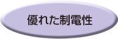
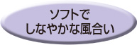

「ソアリスP」は、静電気の発生を抑制する制電性ポリエステルフィラメントです。フィラメント内部に制電剤が練り込まれているので、静電気の発生を抑制し、まとわりつきやパチパチ感、ホコリ等の付着を軽減します。

優れた制電効果を発揮し、まとわりつき、パチパチ感、ホコリ等の付着を軽減します。
フィラメント内部に制電剤が練り込まれており、後加工品に比較し、洗濯耐久性が優れています。

レギュラーポリエステルよりもソフトでしなやかな風合いを保有しています。
※フィラメントの組み合せ、テキスタイルの組織、加工の条件、使用方法によっては性能に差が生じる場合がありますので事前確認の上、ご使用下さい。
●ジャケット、ブルゾン、スラックス、スカート用各種裏地
●インナーウェア、ナイトウェア
●各種ユニフォーム、サービスウェア等 様々な分野での用途展開が可能です。
ＫＢセーレン株式会社
生活資材販売部
kbs.info@kb.seiren.com